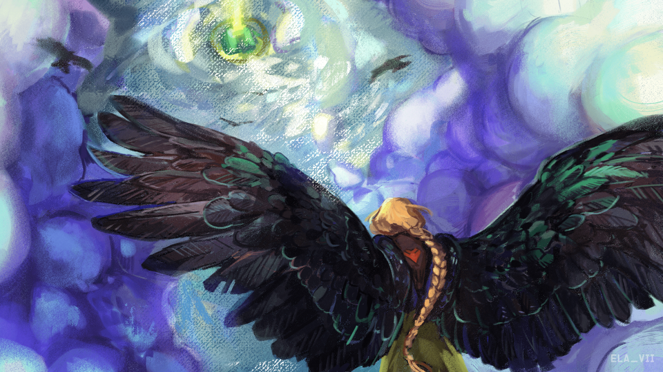

 Phillip "Phil" Watson (né le 1er mars 1988 [34 ans]), mieux connu en ligne sous le nom de Ph1LzA (également connu sous le nom de Philza, Dadza et Philza Minecraft), est un streamer anglais YouTuber et Twitch connu pour jouer à un seul jeu Minecraft continu. en mode Hardcore pendant cinq ans. Le 11 mars 2020, Phil a épousé sa femme, Kristin, après lui avoir proposé au sommet du High Roller à Las Vegas, Nevada. Il fait partie de Sleepyboisinc avec Technoblade, Wilbur Soot et TommyInnit.
Minecraft Championship est un tournoi Minecraft pour YouTubers et Streamers organisé par Noxcrew, dans lequel 10 équipes de quatre s'affrontent dans une série de 8 mini-jeux décidés par les participants. Un multiplicateur de points augmente la valeur de chaque jeu au fur et à mesure que chaque tour passe, incitant les équipes à voter pour des jeux où elles pourraient être mauvaises au début de l'événement. Au final, les deux équipes avec le plus de points s'affrontent dans une manche de "Dodgebolt" pour décider du vainqueur du tournoi. Cela permet à une équipe de gagner même si elle a potentiellement moins de points que la deuxième.